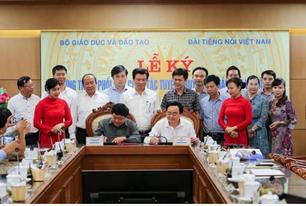
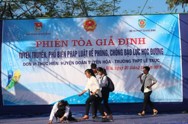

Đẩy mạnh tuyên truyền về giáo dục trên các kênh sóng của Đài Tiếng nói Việt Nam
Chiều 8/10, tại bộ GD&ĐT đã diễn ra lễ kỷ kết chương trình phối hợp công tác tuyên truyền về giáo dục và đào tạo giai đoạn 2019 - 2025 giữa bộ GD&ĐT và Đài Tiếng nói Viêt Nam(TNVN).Bộ trưởng Bộ GD&ĐT Phùng Xuân Nhạ và Tổng Giám đốc Đài TNVN Nguyễn Thế Kỷ dự lễ ký.Theo chương trình phối hợp được ký kết, Bộ GD&ĐT và Đài TNVN thống nhất phối hợp tuyên truyền một số nội dung như sau: Chuẩn bị và thực hiện chương trình giáo dục phổ thông mới; xây dựng môi trường giáo dục an toàn, lành mạnh thân thiện, phòng chống bạo lực học đường tại các cơ sở giáo dục phổ thông; tự chủ đại học; xây dựng xã hội học tập; tuyên truyền thực hiện các văn bản/chính sách/quy định về giáo dục và đào tạo và các vấn đề khác của ngành Giáo dục.

Đổi mới phương thức tuyên truyền phổ biến giáo dục pháp luật cho đoàn viên, thanh niên
Quang Binh Portal) - Phổ biến giáo dục pháp luật là một trong những nội dung quan trọng và thường xuyên nhằm góp phần giáo dục đạo đức, lối sống, hình thành nhân cách cho thế hệ trẻ. Để những kiến thức về pháp luật vốn khô khan trở nên gần gũi hơn với bạn trẻ thì đòi hỏi các cấp bộ Đoàn phải đổi mới phương thức tuyên truyền, giáo dục theo hướng phong phú về nội dung, đa dạng về hình thức, qua đó tạo chuyển biến tích cực trong ngăn chặn làm hạn chế những hành vi vi phạm pháp luật và tệ nạn xã hội giữ gìn an ninh trật tự,an toàn xã hội ở địa phương.Có thể nói,công tác tuyên truyền pháp luật thông qua hình thức Phiên tòa giả định là hình thức mới lạ, mang tính trực quan sinh động, không chỉ phản ánh những hành vi phạm tội, các quy định của pháp luật về mức án được áp dụng dành cho hành vi phạm tội mà còn giúp những người tham dự hiểu rõ về ranh giới giữa đúng-sai,thiện-ác,tính nghiêm minh,hướng thiện của luật pháp.
Từ nữ sinh trường làng đến Quả Cầu Vàng 2019
Đề án nghiên cứu của TS Lê Ngọc Liễu chú trọng việc tinh lọc nhiên liệu sinh học từ rơm và các vật liệu phế thải. Chị tin rằng năng lượng là giải pháp then chốt nhất liên quan vấn đề dân số toàn cầu đang ngày càng gia tăng và năng lượng tái tạo là con đường tốt nhất cho vấn đề này.Công trình nghiên cứu của TS Liễu đã tạo ra giải pháp tái tạo thực sự cho nhu cầu năng lượng của thế giới. Chị khẳng định lợi ích quan trọng nhất của các nguồn năng lượng tái tạo là giảm ô nhiễm môi trường. Các nhiên liệu lỏng, nhiên liệu sinh học vốn được tạo ra từ sinh khối có thể tái tạo, đang ngày càng trở thành nguồn nhiên liệu cho giao thông vận tải trong tương lai.Ban Giám khảo đánh giá cao nghiên cứu của TS Liễu khi nhấn mạnh tầm quan trọng của nhiên liệu sinh học như một nhiên liệu thay thế cho nhiên liệu hóa thạch, cũng như chú trọng phát triển công nghệ tiết kiệm năng lượng để tách lọc và tinh chế vật liệu sinh khối.Sinh ra và lớn lên ở xã Gia Bình, huyện Trảng Bàng, Tây Ninh, TS Lê Ngọc Liễu là học sinh trường làng chính hiệu.
Một học sinh lớp 12 tham gia trong công bố khoa học trên tạp chí ISI
Đó là học sinh Đào Ngọc Minh Khuê, Lớp 12 chuyên Sinh học, Trường THPT Lê Quý Đôn, Bà Rịa - Vũng Tàu. Công trình nghiên cứu có tên Prediction of AChE-ligand Affinity using Umbrella Sampling Simulation (Dự toán ái lực liên kết của AChE với phối tử sử dụng phương pháp gieo mẫu thiên vị). Nghiên cứu này được đăng tải trên trên tap chí Journal of Molecular Graphics and Modelling, NXB Elsevier BV (Hà Lan). Đây là tạp chí thuộc danh mục ISI có chỉ số ảnh hưởng (IF: impact factor) là 1.863 theo Journal Citation Reports (Clarivate, Mỹ); và chỉ số H-index là 67 theo SJR (Tây Ban Nha). Ngoài Minh Khuê, có nhiều tác giả khác cũng đứng tên trong nghiên cứu này như Ngô Thị Lan, Trần Phương Thảo, Nguyễn Thanh Tùng… Người hướng dẫn nghiên cứu là ông Ngô Sơn Tùng, giảng viên Trường ĐH Tôn Đức Thắng. Sự hợp tác này khởi động từ sau Vòng thi chung kết cuộc thi khoa học-kỹ thuật cấp quốc gia dành cho Học sinh trung học Năm 2018-2019, Khu vực phía Nam do Bộ GD-ĐT tổ chức.